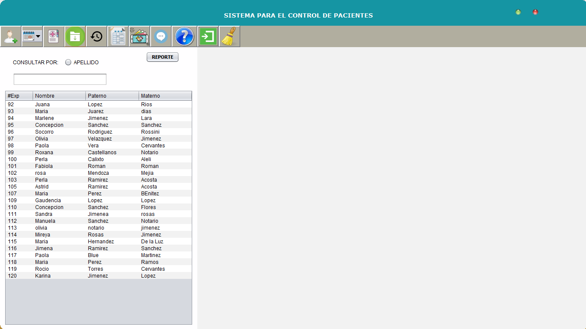
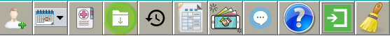
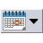
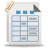

A continuación se dará una breve descripción de cada opción del menú principal


Esta ventana resolverá las dudas que se puedan tener acerca del "Sistema para el control de pacientes".
Versión2.0
Realizado en lenguaje JAVA V_1.7.0_79
Servidor MySQL: MariaDB 10.1.13
Esta página es la ayuda principal. La aplicación consta de una ventana principal y en su interior se ejecuta cada opción elegida por el usuario con ayuda del menú que se encuentra en la parte superior del sistema.
A continuación se dará una breve descripción de cada opción del menú principal